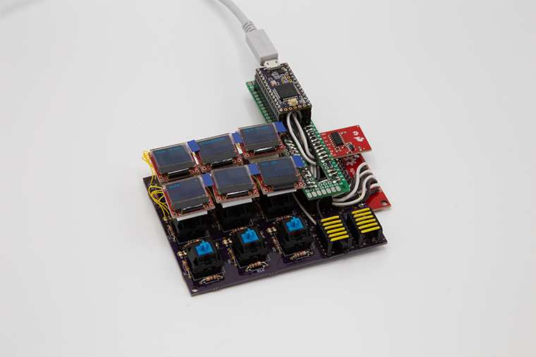
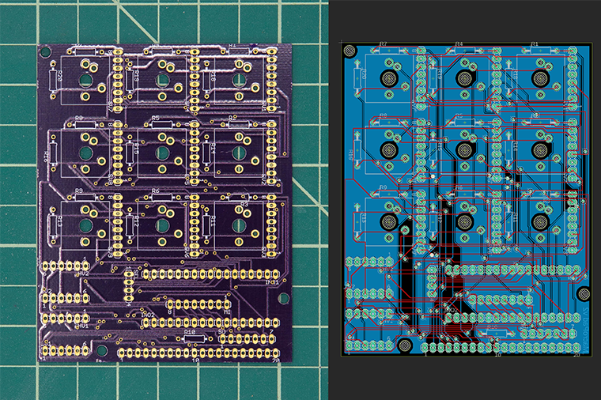
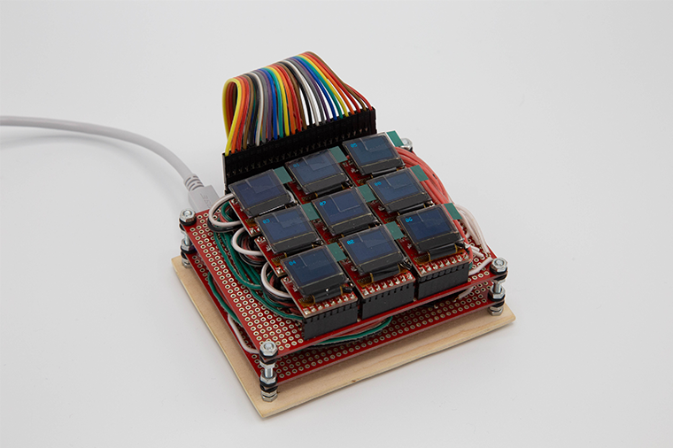
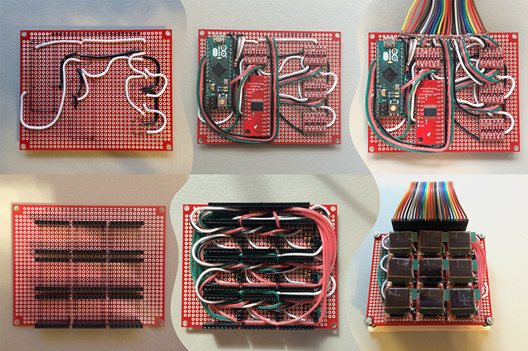

This work was completed as the final project for the BlueStamp Engineering summer program, my page on their website can be viewed here.
{kind=link}

fig. 1 - click on image to enlarge
The second version of the macropad project has many physical differences from the first. The microcontroller was changed from an Arduino Micro to a PJRC Teensy 3.2, the rubber membrane buttons were changed to mechanical keyboard switches, an SD card was added to store bitmap images for the keycaps, and a PCB was designed to streamline the connections made throughout the device.
{kind=link}

fig. 2 - click on image to enlarge
This project was my first experience with PCB design, and though the result is not perfect, it was functional and easily fixable (a green breakout board for the microcontroller can be seen in fig. 1). This version improved on the first with the addition of the PCB and digital storage, but the reliability of the display/switch assembly suffered. I plan to design a new mechanism for the displays and switches, and to replace the individual high-gauge wires with a flexible cable to connect the displays to the PCB.
version 1
2.2016
I built the first iteration of the macropad project for a science fair in high school. The idea was to combine the dynamic interface design of touch displays with the positive tactility of traditional keyboard switches. This was accomplished by integrating small OLED displays into the top of each of the nine buttons on the macropad.
{kind=link}

fig. 1 - click on image to enlarge
The device consists of two boards: the bottom board contains a microcontroller, 16 channel multiplexer, and logic level shifters. The top board breaks out the SPI bus and switch signals, with all signals routed through the ribbon cable connector. This connector makes disassembly and repair more convenient.
{kind=link}

fig. 2 - click on image to enlarge
Fig. 2 Shows the wiring in layers on the two boards, and gives a general sense of the layout of the device.